Regional Ancillary Suite workflow#
A notebook to document and check the outputs of the Regional Ancillary Suite (RAS).
This notebook is located at
21centuryweather/RAS_minimum_working_example
Here we breakdown the (complicated) ancillary workflow to help provide insights when things go wrong.
The rose/cylc task graph for the RAS is quite complex (see below), but in this notebook we will step through each task separately and document its outputs. This will help you understand the dependencies and help you trace any errors if they occur when you create new ancillaries for your own experiments
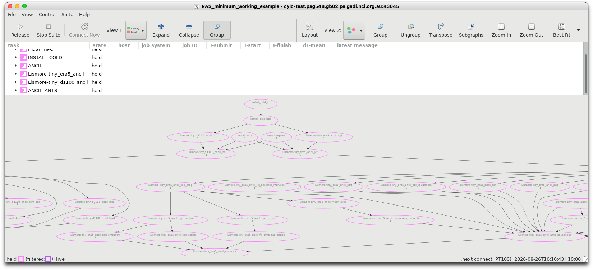
The firsts tasks that run in this suite are INSTALL_COLD, ANCIL_ANTS andANCIL_ANTS. These install a local version of the ants python module in your ~/cylc-run/RAS_minimum_working_example directory, along with various global ancillary datasets required to genreate regional information.
Once these set-up tasks have been complete, the suite will begin to generate ancillaries for every designed region and resolution defined in the suite’s rose-suite.conf file.
Our rose-suite.conf contains one region:
rg01_name="Lismore-tiny"
which contains two resolutions:
rg01_rs01_name="era5"
rg01_rs02_name="d1100"
You can see from the above image that the suite has generated a seperate task family for each resolution:
Lismore-tiny_era5_ancil
Lismore-tiny_d1100_ancil
Both task families contain and identical set of tasks. In this workbook we will step through the second task family, Lismore-tiny_d1100_ancil
Step 1. Install the grid definition namelists.#
Running the task Lismore-tiny_d1100_ancil_top installs the following files into ~cylc-run/RAS_minimum_working_example/share/data/ancils/Lismore-tiny/d1100
grid.nlgrid_eg.nlL70_80kmvertlevs.nl
The first two files are Fortran ‘namelist’ files that contain information of the horizontal latitute/longitude grid (i.e. its bounds, number of points and grid spacing). The latter two files provide the vertical information of the grid.
Step 2. Generate the land-sea mask and vegetation ancillaries on the defined grid.#
The Lismore-tiny_d1100_ancil_lct task generates the land-sea mask and vegetation ancillaries that are consistent with the grid definition contained in the grid namelist files.
This task generates the following files:
qrparm.mask_cci(the land-sea binary mask in UM ancillary binary format)qrparm.mask_cci.nc(as above, but in netCDF format)qrparm.landfrac(the land fraction mask in UM ancillary binary format)qrparm.landfrac.nc(as above, but in netCDF format)qrparm.mask_sea(another land-sea binary mask using different coastline defintion in UM ancillary binary format - not used by the standard RAS suite)qrparm.mask_sea.nc(as above, but in netCDF format)qrparm.veg.frac_cci_pre_c4(9 level vegetation grids in UM ancillary binary format)qrparm.veg.frac_cci_pre_c4.nc(as above, but in netCDF format)
It also generates a symbolic link to qrparm.mask to point toqrparm.mask_cci. This is done to track providence of the mask generation (i.e. using CCI datasets).
Let’s examine the binary land-sea mask and the vegetation grids.
from pathlib import Path
import iris
import numpy as np
import warnings
warnings.filterwarnings("ignore", category=FutureWarning, module="xarray")
import xarray as xr
import matplotlib.pyplot as plt
import os
home_dir=os.environ['HOME']
HOME=Path(home_dir)
ANCIL_DIR = Path( HOME / 'cylc-run/RAS_minimum_working_example/share/data/ancils/Lismore-tiny/d1100')
lsm, = iris.load( ANCIL_DIR / 'qrparm.mask')
xr.DataArray.from_iris(lsm).plot(edgecolor='grey',linewidth=0.5)
<matplotlib.collections.QuadMesh at 0x14d315bbba40>
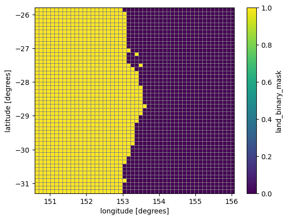
veg_frac_pre_c4, = iris.load( ANCIL_DIR / 'qrparm.veg.frac_cci_pre_c4')
xr.DataArray.from_iris(veg_frac_pre_c4[0]).plot(edgecolor='grey',linewidth=0.5)
<matplotlib.collections.QuadMesh at 0x14d3150df500>
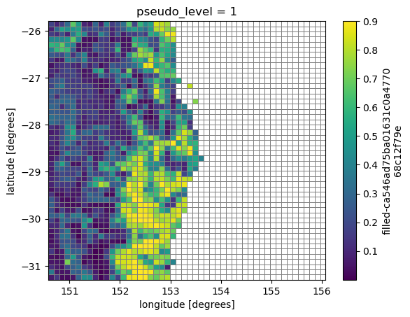
Step 3. Include World Cover data (optional).#
This task will run if you have set WC_URBAN=True in your rose-suite.conf file.
If applicable, this tasks modifies the vegetation ancillaries to include the lastest ‘World Cover’ data. This step allows better representation of urban areas. This step uses the task Lismore-tiny_d1100_ancil_lct_postproc_wc_urban and will update the files:
qrparm.veg.frac_cci_pre_c4,qrparm.veg.frac_cci_pre_c4.nc,
and generate the files
qrparm.veg.frac_cci_pre_c4_pre_wc,qrparm.veg.frac_cci_pre_c4_pre_wc.nc
veg_frac_pre_c4_wc, = iris.load( ANCIL_DIR / 'qrparm.veg.frac_cci_pre_c4_pre_wc')
xr.DataArray.from_iris(veg_frac_pre_c4_wc[0]).plot(edgecolor='grey',linewidth=0.5)
<matplotlib.collections.QuadMesh at 0x14d314f97500>
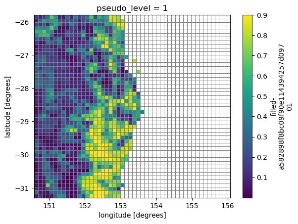
Step 4. Install C4 land cover data#
The vegetation processing is completed with the task Lismore-tiny_d1100_ancil_lct_postproc_c4. This injects ‘C4’ data into the land cover type fraction dataset, and produces the output files:
qrparm.veg.frac_cci,qrparm.veg.frac_cci.nc
A symbolic link is created to both of these files which removes the last suffix, i.e.
qrparm.veg.frac -> qrparm.veg.frac_cciqrparm.veg.frac.nc -> qrparm.veg.frac_cci.nc
veg_frac, = iris.load( ANCIL_DIR / 'qrparm.veg.frac_cci')
xr.DataArray.from_iris(veg_frac[0]).plot(edgecolor='grey',linewidth=0.5)
<matplotlib.collections.QuadMesh at 0x14d314f974a0>
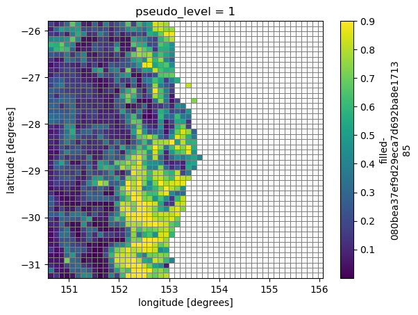
The following flowchart summarises the task flow to generate the vegetation land cover classification ancillaries.
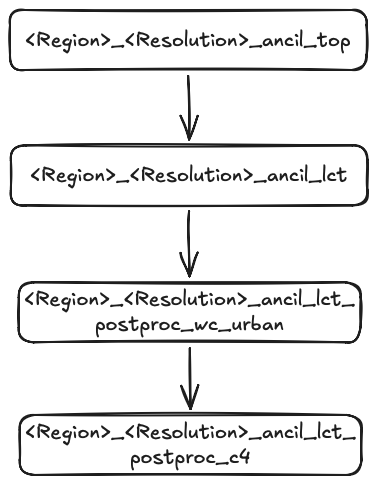
We have now run all the major master, ‘umbrella’ tasks for the ancilliary suite.
Now the final vegetation land cover classification ancillaries have been created, the suite splits and launches many tasks in parallel. Some tasks are grouped into their own subclasses with their own dependencies, such as
orography
soil characteristics
leaf areas and canopy heights
ice and snow
moruses
Let’s review the orography set of tasks first.
The first orography task is Lismore-tiny_d1100_ancil_cap_orog. Any tasks that contain cap in their task name do not use the python ants library. Rather they use the older UM binary. E.g. this task is launched with the command
$ more app/ancil_cap_orog/rose-app.conf
meta=ancilOrog
[command]
default=rose mpi-launch -v central_ancillary.exe
Step 5. Generate orography.#
Triggering the task Lismore-tiny_d1100_ancil_cap_orog will generate the file qrparm.orog.
orog = iris.load( ANCIL_DIR / 'qrparm.orog')
xr.DataArray.from_iris(orog[0]).plot(edgecolor='grey',linewidth=0.5)
<matplotlib.collections.QuadMesh at 0x14d314d3f500>
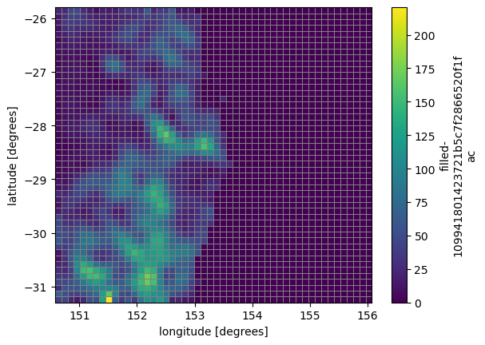
The co-ordinates of qrparm.orog are produced by an older Fortan CAP exe and are 32-bit co-ordinates by default.
The next orography task is Lismore-tiny_d1100_ancil_mean_orog. This is two-step task that firstly
produces a concatentated SRTM orography file
orog_srtm/SRTM_concat.nc(which is a global dataset)then produces the file
orog_srtm/qrparm.orog.srtm.nc
NOTE! The file orog_srtm/qrparm.orog.srtm.nc is a temporary file that will be deleted when the next task, Lismore-tiny_d1100_ancil_mean_orog_smooth,is executed. It will only be visible if you trigger the task Lismore-tiny_d1100_ancil_mean_orog manually and hold the subsequent Lismore-tiny_d1100_ancil_mean_orog_smooth task.
orog_srtm=iris.load_cube(ANCIL_DIR / 'orog_srtm/qrparm.orog.srtm.nc')
xr.DataArray.from_iris(orog_srtm).plot(edgecolor='grey',linewidth=0.5)
<matplotlib.collections.QuadMesh at 0x14d3003d48c0>
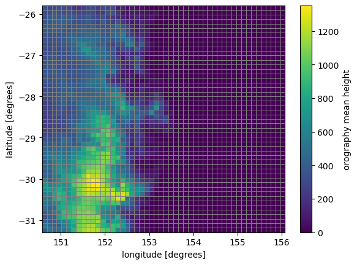
IMPORTANT!! The SRTM orography dataset is not defined beyond +/- 60 latitude!! If you want to run an experiment close to the poles, you’ll need to change the default suite behaviour. See here for more details:
The final orography task is Lismore-tiny_d1100_ancil_mean_orog_smooth, which smooths the SRTM data according to a variety of algorithms. This produces the folowing files in ./orog_srtm/:
qrparm.orog.srtm.121x1
qrparm.orog.srtm.121x10
qrparm.orog.srtm.121x100
qrparm.orog.srtm.121x20
qrparm.orog.srtm.121x35
qrparm.orog.srtm.121x5
qrparm.orog.srtm.121x50
qrparm.orog.srtm.121x75
In the main ancilliary directory, a symbolic link qrparm.orog.mn links to orog_srtm/qrparm.orog.srtm.121x1
orog_smooth, = iris.load( ANCIL_DIR / 'qrparm.orog.mn')
xr.DataArray.from_iris(orog_smooth).plot(edgecolor='grey',linewidth=0.5)
<matplotlib.collections.QuadMesh at 0x14d31492c8c0>
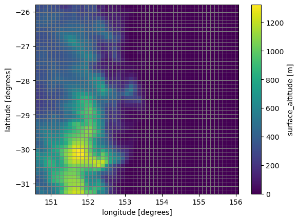
The following flowchart describes the task flows for orography related tasks.
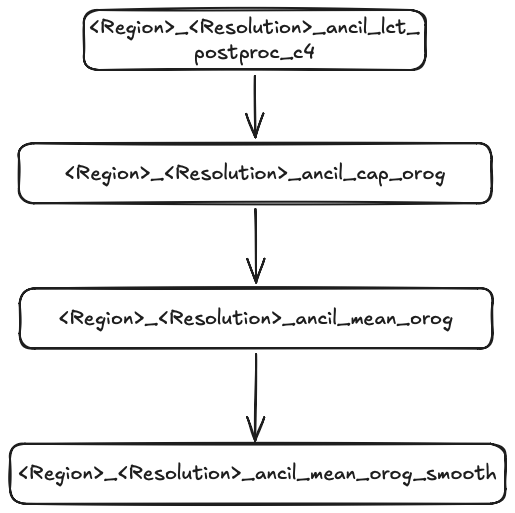
Step 7. Process soil characteristics#
The next set of multi-step tasks are related to generating soil characteristics. First, we begin with <Region>_<Resolution>_ancil_soils_hydr. This reads in the global soils_hydrology.nc file, regrids it to our target domain and saves it to soil_hydrology
hydro = iris.load(ANCIL_DIR / 'soil_hydrology')
xr.DataArray.from_iris(hydro[0]).plot(edgecolor='grey',linewidth=0.5)
<matplotlib.collections.QuadMesh at 0x14d31506e6f0>
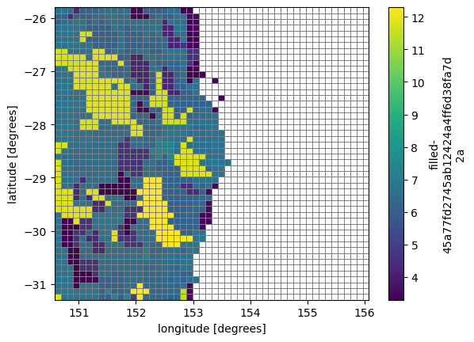
Next we process the soil albedo with the task <Region>_<Resolution>_ancil_soil_albedo. This reads in the global dataset soil_albedo.nc along with the existing files:
soil_hydrologyqrparm.veg.frac.ncand outputsqrparm.soil_cci
The global albedo dataset may require manual inputs to provide data for small islands. It is defined on 0.05 degree grid.
albedo = xr.open_dataset('/home/548/pag548/cylc-run/rCM3-ancil-suite/share/data/etc/ancil_master_ants/soil_albedo/classic/v3/soil_albedo.nc')
albedo.soil_albedo.sel(latitude=slice(-26,-32),longitude=slice(150,156)).plot()
<matplotlib.collections.QuadMesh at 0x14d301a9c8c0>
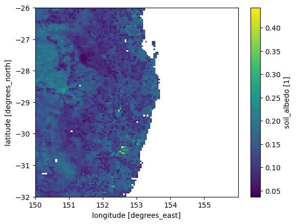
soil = iris.load( ANCIL_DIR / 'qrparm.soil_cci')
xr.DataArray.from_iris(soil[0]).plot(edgecolor='grey',linewidth=0.5)
<matplotlib.collections.QuadMesh at 0x14d301a348c0>
The last task in this dependency is <Region>_<Resolution>_ancil_soil_dust. This processes the qrparm.soil_cci and qrparm.veg.frac ancillary files and generates the ancillary qrparm.soil.dust
dust = iris.load( ANCIL_DIR / 'qrparm.soil.dust')
xr.DataArray.from_iris(dust[0]).plot(edgecolor='grey',linewidth=0.5)
<matplotlib.collections.QuadMesh at 0x14d301a34710>
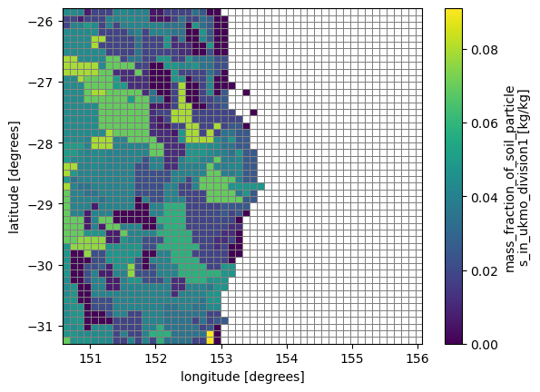
The flowchart below describes the dependencies of the above soil-related tasks.
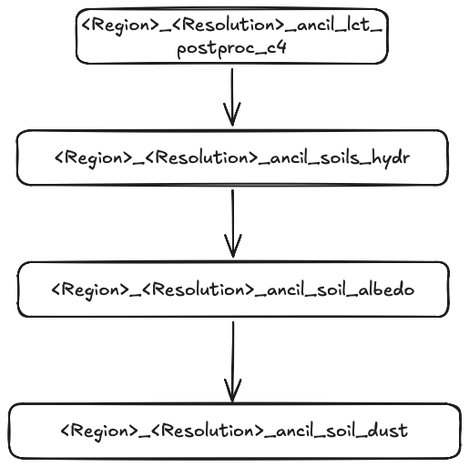
There are two stand-alone soils tasks.
The first is<Region>_<Resolution>_ancil_soil_roughness which uses the existing qrparm.veg.frac.nc file along with global MODIS leaf area index data and global soil roughness data to produce qrparm.soil_roughness.
rough, = iris.load( ANCIL_DIR / 'qrparm.soil_roughness')
/home/548/pag548/.local/lib/python3.12/site-packages/iris/fileformats/_ff.py:737: _WarnComboLoadingDefaulting: The stash code m01s00i097 is on a grid 0 which has not been explicitly handled by the fieldsfile loader. Assuming the data is on a P grid.
warnings.warn(
xr.DataArray.from_iris(rough).plot(edgecolor='grey',linewidth=0.5)
<matplotlib.collections.QuadMesh at 0x14d3018948c0>
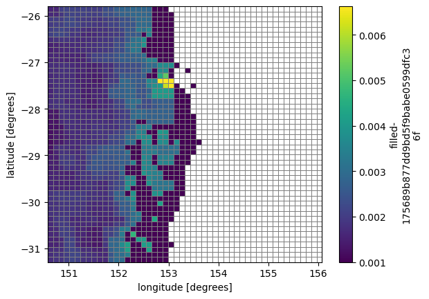
The second task is related to soil hydrology and is called<Region>_<Resolution>_ancil_topographic_index. It also uses qrparm.veg.frac.nc file along with global topographic wetness index data to produce qrparm.hydtop.
topo = iris.load( ANCIL_DIR / 'qrparm.hydtop')
xr.DataArray.from_iris(topo[0]).plot(edgecolor='grey',linewidth=0.5)
<matplotlib.collections.QuadMesh at 0x14d300b87500>
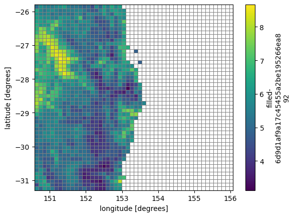
Step 8. Process leaf and canopy data.#
We need to populate the vegetation with leaf and canopy data. The first task is <Region>_<Resolution>_ancil_lai which processes ‘Leaf Area Index’ and produces a temporary file lai.
lai, = iris.load( ANCIL_DIR / 'lai')
xr.DataArray.from_iris(lai)[0,0].plot(edgecolor='grey',linewidth=0.5)
<matplotlib.collections.QuadMesh at 0x14d300abe300>
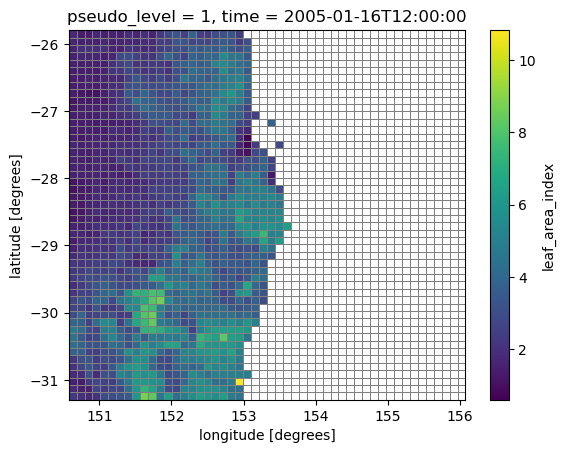
The next task <Region>_<Resolution>_ancil_canopy_heights combines the lai ancillary with tree data and canopy height factors and writes the data to qrparm.veg.func
lai_canopy = iris.load( ANCIL_DIR / 'qrparm.veg.func')
xr.DataArray.from_iris(lai_canopy[0][0,0]).plot(edgecolor='grey',linewidth=0.5)
<matplotlib.collections.QuadMesh at 0x14d300827620>
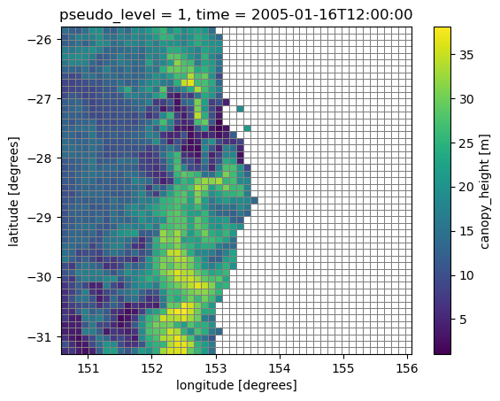
The flowchart below describes the dependencies of the above soil-related tasks.
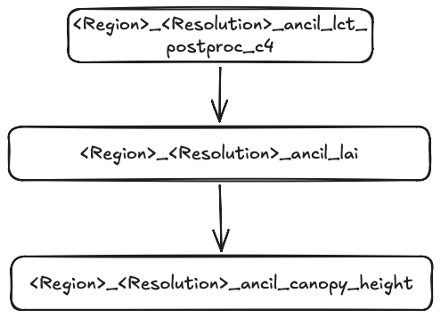
Step 9. Process SST/ice and snow#
The last multi-step tasks which contain a chain of dependencies begins with <Region>_<Resolution>_ancil_cap_vegfrac. Like the previous ancil_cap task, this uses an older FORTRAN binary and is independent of the python-based ants workflow.
This task outputs
qrparm.veg.func_igbpqrparm.veg.frac_igbpqrparm.veg.distqrparm.soil.dust_igbp
And it updates qrparm.soil.
veg_frac_igbp, = iris.load( ANCIL_DIR / 'qrparm.veg.frac_igbp')
xr.DataArray.from_iris(veg_frac_igbp)[3].plot(edgecolor='grey',linewidth=0.5)
<matplotlib.collections.QuadMesh at 0x14d30082de80>
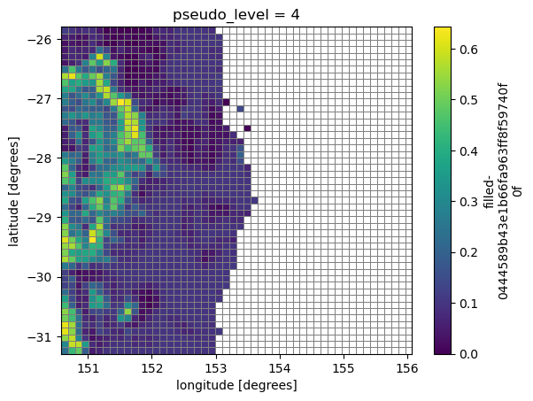
soil_dust = iris.load( ANCIL_DIR / 'qrparm.soil.dust_igbp')
xr.DataArray.from_iris(soil_dust[0]).plot(edgecolor='grey',linewidth=0.5)
<matplotlib.collections.QuadMesh at 0x14d3008451f0>
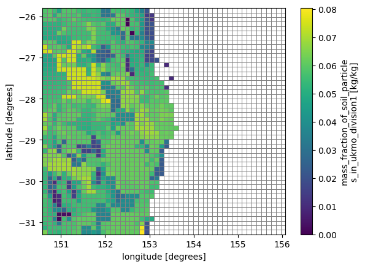
soil = iris.load( ANCIL_DIR / 'qrparm.soil')
xr.DataArray.from_iris(soil_dust[4]).plot(edgecolor='grey',linewidth=0.5)
<matplotlib.collections.QuadMesh at 0x14d30184a270>
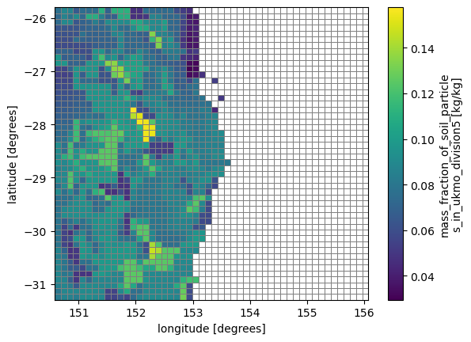
There are two tasks downstream of <Region>_<Resolution>_ancil_cap_vegfrac. One is <Region>_<Resolution>_ancil_cap_sstice. This task processes global climatologies for seaice and SSTs
qrclim.sstqrclim.seaice
seaice = iris.load( ANCIL_DIR / 'qrclim.seaice')
xr.DataArray.from_iris(seaice[1][0]).plot(edgecolor='grey',linewidth=0.5)
/jobfs/179310500.gadi-pbs/ipykernel_848699/979677363.py:1: FutureWarning: In a future version, xarray will not decode the variable 'forecast_period' into a timedelta64 dtype based on the presence of a timedelta-like 'units' attribute by default. Instead it will rely on the presence of a timedelta64 'dtype' attribute, which is now xarray's default way of encoding timedelta64 values.
To continue decoding into a timedelta64 dtype, either set `decode_timedelta=True` when opening this dataset, or add the attribute `dtype='timedelta64[ns]'` to this variable on disk.
To opt-in to future behavior, set `decode_timedelta=False`.
xr.DataArray.from_iris(seaice[1][0]).plot(edgecolor='grey',linewidth=0.5)
<matplotlib.collections.QuadMesh at 0x14d300b6e630>
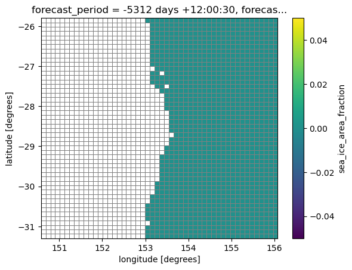
sst = iris.load( ANCIL_DIR / 'qrclim.sst')
xr.DataArray.from_iris(sst[0][0]).plot(edgecolor='grey',linewidth=0.5)
/jobfs/179310500.gadi-pbs/ipykernel_848699/1747977962.py:1: FutureWarning: In a future version, xarray will not decode the variable 'forecast_period' into a timedelta64 dtype based on the presence of a timedelta-like 'units' attribute by default. Instead it will rely on the presence of a timedelta64 'dtype' attribute, which is now xarray's default way of encoding timedelta64 values.
To continue decoding into a timedelta64 dtype, either set `decode_timedelta=True` when opening this dataset, or add the attribute `dtype='timedelta64[ns]'` to this variable on disk.
To opt-in to future behavior, set `decode_timedelta=False`.
xr.DataArray.from_iris(sst[0][0]).plot(edgecolor='grey',linewidth=0.5)
<matplotlib.collections.QuadMesh at 0x14d3005743e0>
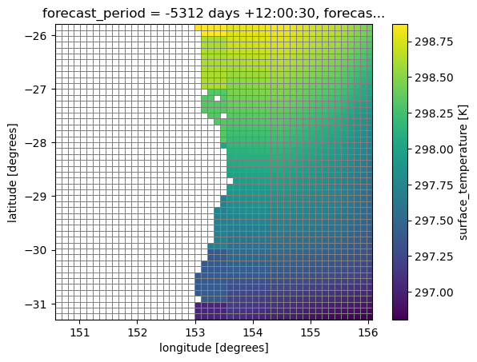
The other task is <Region>_<Resolution>_ancil_cap_smcsnow. This task processes global climatologies for soil moisture content and snow. The output is qrclim.smow
smow = iris.load( ANCIL_DIR / 'qrclim.smow')
/home/548/pag548/.local/lib/python3.12/site-packages/iris/fileformats/pp.py:1490: CFWarning: this date/calendar/year zero convention is not supported by CF
self._t1 = cftime.datetime(
/home/548/pag548/.local/lib/python3.12/site-packages/iris/fileformats/pp.py:1523: CFWarning: this date/calendar/year zero convention is not supported by CF
self._t2 = cftime.datetime(
xr.DataArray.from_iris(smow[6][0]).plot(edgecolor='grey',linewidth=0.5)
/jobfs/179310500.gadi-pbs/ipykernel_848699/217714727.py:1: FutureWarning: In a future version, xarray will not decode the variable 'forecast_period' into a timedelta64 dtype based on the presence of a timedelta-like 'units' attribute by default. Instead it will rely on the presence of a timedelta64 'dtype' attribute, which is now xarray's default way of encoding timedelta64 values.
To continue decoding into a timedelta64 dtype, either set `decode_timedelta=True` when opening this dataset, or add the attribute `dtype='timedelta64[ns]'` to this variable on disk.
To opt-in to future behavior, set `decode_timedelta=False`.
xr.DataArray.from_iris(smow[6][0]).plot(edgecolor='grey',linewidth=0.5)
<matplotlib.collections.QuadMesh at 0x14d300399fd0>
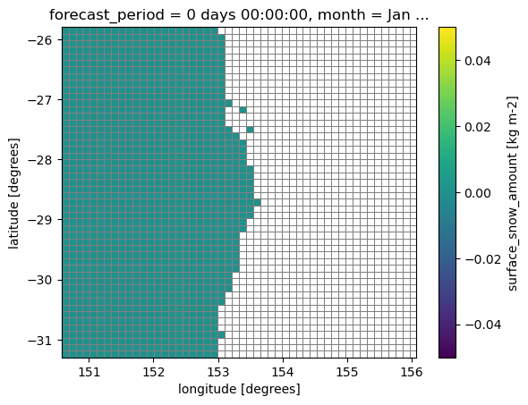
The flowchart below shows the task dependencies for all cap related tasks.
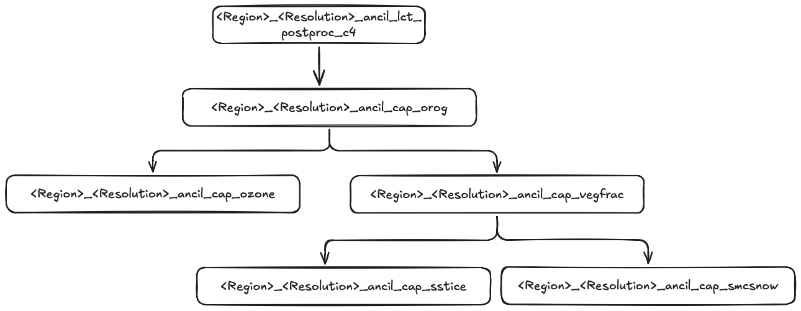
Step 10. Process remaining stand-alone tasks.#
The last stand-alone tasks can be divided into three sections. The first is ozone processing:
<Region>_<Resolution>_ancil_cap_ozone
which uses the FORTRAN exectuable. The next group of tasks compute aerosol climatologies as specified in the suite.rc
{% set AERO_CLIMS = ["biog", "biom", "blck", "dust", "ocff", "sslt", "sulp"] %}
<Region>_<Resolution>_ancil_ocff<Region>_<Resolution>_ancil_biog<Region>_<Resolution>_ancil_biom<Region>_<Resolution>_ancil_blck<Region>_<Resolution>_ancil_sslt<Region>_<Resolution>_ancil_sulp<Region>_<Resolution>_ancil_dust
They simply regrid the global climatologies of these quantities onto the local lat/lon grid and the specified vertical levels. They output both UM ancillary format and netCDF files.
These are the remaining tasks that use the python ants workflows.
<Region>_<Resolution>_ancil_topographic_index<Region>_<Resolution>_ancil_clim_sea<Region>_<Resolution>_ancil_lake
Let’s examine the outputs of these tasks.
<Region>_<Resolution>_ancil_cap_ozone produces the local ozone climatology qrclim.ozone.unfix
ozone, = iris.load( ANCIL_DIR / 'qrclim.ozone.unfix')
/home/548/pag548/.local/lib/python3.12/site-packages/iris/fileformats/_ff.py:737: _WarnComboLoadingDefaulting: The stash code m01s00i060 is on a grid 22 which has not been explicitly handled by the fieldsfile loader. Assuming the data is on a P grid.
warnings.warn(
/home/548/pag548/.local/lib/python3.12/site-packages/iris/fileformats/rules.py:376: IrisUserWarning: Unable to create instance of HybridPressureFactory. The source data contains no field(s) for 'surface_air_pressure'.
warnings.warn(
xr.DataArray.from_iris(ozone[0]).plot(edgecolor='grey',linewidth=0.5)
/jobfs/179310500.gadi-pbs/ipykernel_848699/2504981220.py:1: FutureWarning: In a future version, xarray will not decode the variable 'forecast_period' into a timedelta64 dtype based on the presence of a timedelta-like 'units' attribute by default. Instead it will rely on the presence of a timedelta64 'dtype' attribute, which is now xarray's default way of encoding timedelta64 values.
To continue decoding into a timedelta64 dtype, either set `decode_timedelta=True` when opening this dataset, or add the attribute `dtype='timedelta64[ns]'` to this variable on disk.
To opt-in to future behavior, set `decode_timedelta=False`.
xr.DataArray.from_iris(ozone[0]).plot(edgecolor='grey',linewidth=0.5)
<matplotlib.collections.QuadMesh at 0x14d30081c8c0>
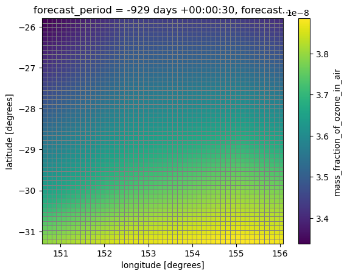
Let’s now examine the aerosol climatologies:
<Region>_<Resolution>_ancil_ocffproduces dry aerosol climatologies of organic carbon from fossil fuels and is stored inqrclim.ocff.<Region>_<Resolution>_ancil_sulpproduces dry aerosol climatologies of sulfate and is stored inqrclim.sulp.<Region>_<Resolution>_ancil_biogproduces aerosol climatologies of biogenic Non-Methane Volatile Organic Compounds and is stored inqrclim.biog.<Region>_<Resolution>_ancil_blkproduces aerosol climatologies of black carbon and are stored inqrclim.blck.<Region>_<Resolution>_ancil_biomproduces aerosol climatologies of fresh burning biomass and is stored inqrclim.biom.<Region>_<Resolution>_ancil_ssltproduces aerosol climatologies of sea salt particles and is stored inqrclim.sslt.<Region>_<Resolution>_ancil_dustproduces aerosol climatologies of dust and is stored inqrclim.dust.
AERO_CLIMS = ["biog", "biom", "blck", "dust", "ocff", "sslt", "sulp"]
fig = plt.figure(figsize=(12,10))
num_rows=3
num_columns=3
Position=range(1,len(AERO_CLIMS)+1)
k=0
for CLIM in AERO_CLIMS:
clim = iris.load( ANCIL_DIR / f'qrclim.{CLIM}')
ax = fig.add_subplot(num_rows, num_columns, Position[k])
xr.DataArray.from_iris(clim[0][0,0]).plot(ax=ax)
ax.set_title(CLIM)
k+=1
plt.tight_layout()
/home/548/pag548/.local/lib/python3.12/site-packages/iris/fileformats/rules.py:376: IrisUserWarning: Unable to create instance of HybridHeightFactory. The source data contains no field(s) for 'orography'.
warnings.warn(
/jobfs/179310500.gadi-pbs/ipykernel_848699/2672610593.py:11: FutureWarning: In a future version, xarray will not decode the variable 'forecast_period' into a timedelta64 dtype based on the presence of a timedelta-like 'units' attribute by default. Instead it will rely on the presence of a timedelta64 'dtype' attribute, which is now xarray's default way of encoding timedelta64 values.
To continue decoding into a timedelta64 dtype, either set `decode_timedelta=True` when opening this dataset, or add the attribute `dtype='timedelta64[ns]'` to this variable on disk.
To opt-in to future behavior, set `decode_timedelta=False`.
xr.DataArray.from_iris(clim[0][0,0]).plot(ax=ax)
/home/548/pag548/.local/lib/python3.12/site-packages/iris/fileformats/rules.py:376: IrisUserWarning: Unable to create instance of HybridHeightFactory. The source data contains no field(s) for 'orography'.
warnings.warn(
/jobfs/179310500.gadi-pbs/ipykernel_848699/2672610593.py:11: FutureWarning: In a future version, xarray will not decode the variable 'forecast_period' into a timedelta64 dtype based on the presence of a timedelta-like 'units' attribute by default. Instead it will rely on the presence of a timedelta64 'dtype' attribute, which is now xarray's default way of encoding timedelta64 values.
To continue decoding into a timedelta64 dtype, either set `decode_timedelta=True` when opening this dataset, or add the attribute `dtype='timedelta64[ns]'` to this variable on disk.
To opt-in to future behavior, set `decode_timedelta=False`.
xr.DataArray.from_iris(clim[0][0,0]).plot(ax=ax)
/home/548/pag548/.local/lib/python3.12/site-packages/iris/fileformats/rules.py:376: IrisUserWarning: Unable to create instance of HybridHeightFactory. The source data contains no field(s) for 'orography'.
warnings.warn(
/jobfs/179310500.gadi-pbs/ipykernel_848699/2672610593.py:11: FutureWarning: In a future version, xarray will not decode the variable 'forecast_period' into a timedelta64 dtype based on the presence of a timedelta-like 'units' attribute by default. Instead it will rely on the presence of a timedelta64 'dtype' attribute, which is now xarray's default way of encoding timedelta64 values.
To continue decoding into a timedelta64 dtype, either set `decode_timedelta=True` when opening this dataset, or add the attribute `dtype='timedelta64[ns]'` to this variable on disk.
To opt-in to future behavior, set `decode_timedelta=False`.
xr.DataArray.from_iris(clim[0][0,0]).plot(ax=ax)
/home/548/pag548/.local/lib/python3.12/site-packages/iris/fileformats/rules.py:376: IrisUserWarning: Unable to create instance of HybridHeightFactory. The source data contains no field(s) for 'orography'.
warnings.warn(
/jobfs/179310500.gadi-pbs/ipykernel_848699/2672610593.py:11: FutureWarning: In a future version, xarray will not decode the variable 'forecast_period' into a timedelta64 dtype based on the presence of a timedelta-like 'units' attribute by default. Instead it will rely on the presence of a timedelta64 'dtype' attribute, which is now xarray's default way of encoding timedelta64 values.
To continue decoding into a timedelta64 dtype, either set `decode_timedelta=True` when opening this dataset, or add the attribute `dtype='timedelta64[ns]'` to this variable on disk.
To opt-in to future behavior, set `decode_timedelta=False`.
xr.DataArray.from_iris(clim[0][0,0]).plot(ax=ax)
/home/548/pag548/.local/lib/python3.12/site-packages/iris/fileformats/rules.py:376: IrisUserWarning: Unable to create instance of HybridHeightFactory. The source data contains no field(s) for 'orography'.
warnings.warn(
/jobfs/179310500.gadi-pbs/ipykernel_848699/2672610593.py:11: FutureWarning: In a future version, xarray will not decode the variable 'forecast_period' into a timedelta64 dtype based on the presence of a timedelta-like 'units' attribute by default. Instead it will rely on the presence of a timedelta64 'dtype' attribute, which is now xarray's default way of encoding timedelta64 values.
To continue decoding into a timedelta64 dtype, either set `decode_timedelta=True` when opening this dataset, or add the attribute `dtype='timedelta64[ns]'` to this variable on disk.
To opt-in to future behavior, set `decode_timedelta=False`.
xr.DataArray.from_iris(clim[0][0,0]).plot(ax=ax)
/home/548/pag548/.local/lib/python3.12/site-packages/iris/fileformats/rules.py:376: IrisUserWarning: Unable to create instance of HybridHeightFactory. The source data contains no field(s) for 'orography'.
warnings.warn(
/jobfs/179310500.gadi-pbs/ipykernel_848699/2672610593.py:11: FutureWarning: In a future version, xarray will not decode the variable 'forecast_period' into a timedelta64 dtype based on the presence of a timedelta-like 'units' attribute by default. Instead it will rely on the presence of a timedelta64 'dtype' attribute, which is now xarray's default way of encoding timedelta64 values.
To continue decoding into a timedelta64 dtype, either set `decode_timedelta=True` when opening this dataset, or add the attribute `dtype='timedelta64[ns]'` to this variable on disk.
To opt-in to future behavior, set `decode_timedelta=False`.
xr.DataArray.from_iris(clim[0][0,0]).plot(ax=ax)
/home/548/pag548/.local/lib/python3.12/site-packages/iris/fileformats/rules.py:376: IrisUserWarning: Unable to create instance of HybridHeightFactory. The source data contains no field(s) for 'orography'.
warnings.warn(
/jobfs/179310500.gadi-pbs/ipykernel_848699/2672610593.py:11: FutureWarning: In a future version, xarray will not decode the variable 'forecast_period' into a timedelta64 dtype based on the presence of a timedelta-like 'units' attribute by default. Instead it will rely on the presence of a timedelta64 'dtype' attribute, which is now xarray's default way of encoding timedelta64 values.
To continue decoding into a timedelta64 dtype, either set `decode_timedelta=True` when opening this dataset, or add the attribute `dtype='timedelta64[ns]'` to this variable on disk.
To opt-in to future behavior, set `decode_timedelta=False`.
xr.DataArray.from_iris(clim[0][0,0]).plot(ax=ax)
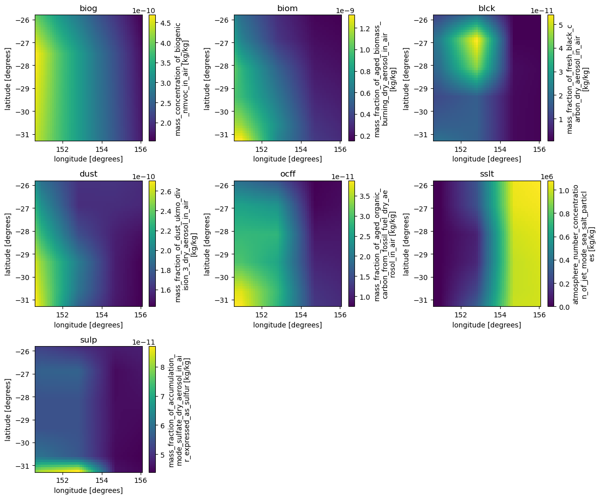
The remainings tasks are :
<Region>_<Resolution>_ancil_clim_seawhich produces climatology of ocean chlorophyll concentrations which are stored inqrclim.sea
sea, = iris.load( ANCIL_DIR / 'qrclim.sea')
xr.DataArray.from_iris(sea[0]).plot(edgecolor='grey',linewidth=0.5)
/jobfs/179310500.gadi-pbs/ipykernel_848699/3069948462.py:1: FutureWarning: In a future version, xarray will not decode the variable 'forecast_period' into a timedelta64 dtype based on the presence of a timedelta-like 'units' attribute by default. Instead it will rely on the presence of a timedelta64 'dtype' attribute, which is now xarray's default way of encoding timedelta64 values.
To continue decoding into a timedelta64 dtype, either set `decode_timedelta=True` when opening this dataset, or add the attribute `dtype='timedelta64[ns]'` to this variable on disk.
To opt-in to future behavior, set `decode_timedelta=False`.
xr.DataArray.from_iris(sea[0]).plot(edgecolor='grey',linewidth=0.5)
<matplotlib.collections.QuadMesh at 0x14d2fbff4710>
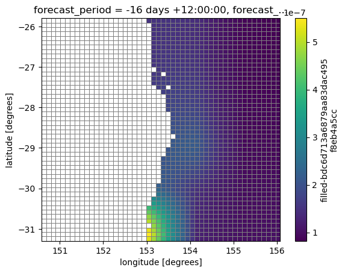
<Region>_<Resolution>_ancil_lakewhich regrids the global lake mask dataset and produces the local ancillary fileqrparm.lake.
global_lake_file = Path('/home/548/pag548/cylc-run/rCM3-ancil-suite/share/data/etc/ancil_master_ants//lake/ARClake/v2/qrdata.mask.nc')
global_lake = xr.load_dataset(global_lake_file)
global_lake.lake_mask.plot()
<matplotlib.collections.QuadMesh at 0x14d2fbff64b0>
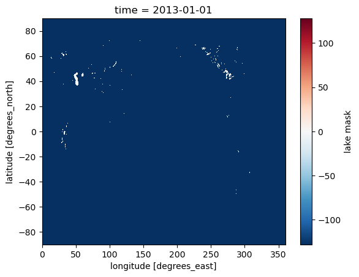
lake, = iris.load( ANCIL_DIR / 'qrparm.lake')
xr.DataArray.from_iris(lake).plot(edgecolor='grey',linewidth=0.5)
<matplotlib.collections.QuadMesh at 0x14d2fbde3f50>
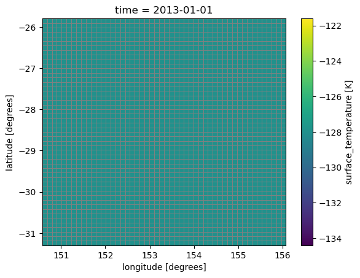
The global lake dataset identifies large inland lakes (e.g. Caspian Sea, The Great Lakes) and sets a mask value of -128 everywhere else
<Region>_<Resolution>_ancil_lct_postproc_morusesperforms a two-type urban fraction and urban morphology post-processor to implement the Met Office–Reading Urban Surface Exchange Scheme (MORUSES). The intermediate output file isqrparm.MORUSES.morph
moru = iris.load( ANCIL_DIR / 'qrparm.MORUSES.morph')
xr.DataArray.from_iris(moru[0]).plot(edgecolor='grey',linewidth=0.5)
<matplotlib.collections.QuadMesh at 0x14d2fbfac8c0>
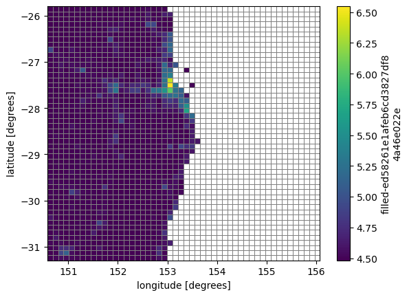
<Region>_<Resolution>_ancil_lct_landruns the applicationapp/ancil_snowfree_albedo/rose-app.conf. The suite logic insuite-runtime/ants.rcstates:
[[{{ancil(regn, resln)}}_land]]
# SW snow-free surface albedo.
inherit = {{ancil(regn, resln)}},ANCIL_SNOWFREE_ALBEDO
and
[[ANCIL_SNOWFREE_ALBEDO]]
inherit = ANCIL_ANTS, HOST_ANTS_MPP
[[[environment]]]
ROSE_TASK_APP=ancil_snowfree_albedo
The output of this task is qrclim.land
land = iris.load( ANCIL_DIR / 'qrclim.land')
xr.DataArray.from_iris(land[0][0]).plot(edgecolor='grey',linewidth=0.5)
/jobfs/179310500.gadi-pbs/ipykernel_848699/2023900724.py:1: FutureWarning: In a future version, xarray will not decode the variable 'forecast_period' into a timedelta64 dtype based on the presence of a timedelta-like 'units' attribute by default. Instead it will rely on the presence of a timedelta64 'dtype' attribute, which is now xarray's default way of encoding timedelta64 values.
To continue decoding into a timedelta64 dtype, either set `decode_timedelta=True` when opening this dataset, or add the attribute `dtype='timedelta64[ns]'` to this variable on disk.
To opt-in to future behavior, set `decode_timedelta=False`.
xr.DataArray.from_iris(land[0][0]).plot(edgecolor='grey',linewidth=0.5)
<matplotlib.collections.QuadMesh at 0x14d2fbdaaea0>
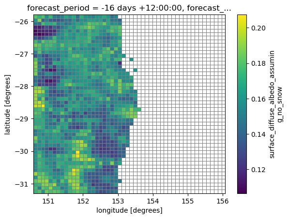
How do I check the validity of the ancillaries?#
Now run the notebook ‘Check_UM_ancils.ipynb’ to confirm:
Your ancillaries generated with the python
antsand Fortrancapworkflows have the same co-ordinates (to within reasonable precision).There are no empty (or NaN values) over the land area defined by the land-sea mask
You can access the notebook here : 21centuryweather/UM_configuration_tools
and in Cell 7, set
ROSE=RAS_minimum_working_example